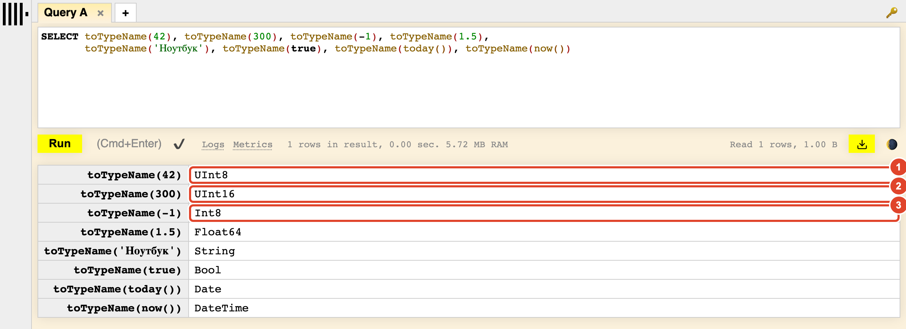
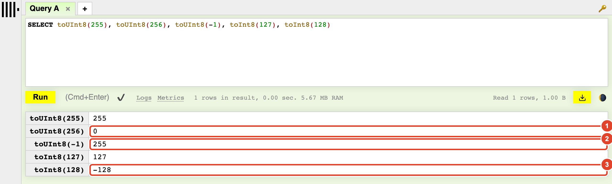
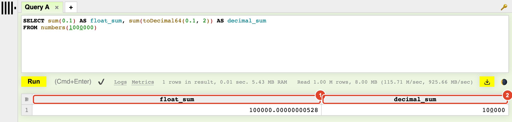
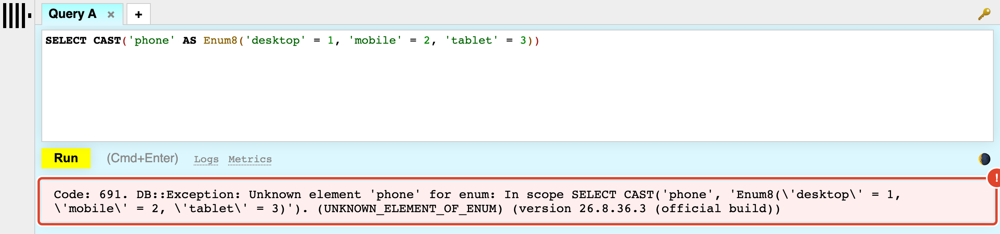

Тип данныхdata type
Правило для значений столбца или выражения: что допустимо и сколько байт занимает каждое значение.
ПримерtoTypeName(300) → UInt16.
Где§1, §2
Справочник по ClickHouse · модуль 1 · первые данные
Глава 1.2
В главе — типы столбцов ClickHouse: целые и дробные числа, деньги, текст, даты, «да или нет», идентификаторы и списки значений. Для каждого — что в нём помещается, сколько он весит и где он подводит.
Суть за две минуты
Тип решает, что можно положить в столбец и сколько байт займёт каждое значение.
Умножьте байты на 10 миллионов строк — и выбор типа становится заметен.
toUInt8(256) даёт 0 без всякой ошибки.
Берите тип с запасом по диапазону.
Миллион раз по 0,1 во Float — 100000.00000000528, в Decimal — ровно 100000.
Для денег — Decimal или целые рубли.
Зачем это знатьВ главе 1.1 DESCRIBE показал у каждого столбца тип. Тип задают один раз при создании таблицы, и потом он действует для всех строк.
У типа две задачи. Первая — не пустить в столбец чужое: в price UInt32 не положить слово «дорого». Вторая — задать размер: сколько байт занимает каждое значение. Типы ClickHouse весят по-разному:
Все типы, кроме строки, весят одинаково при любом значении. Строка весит столько, сколько в ней текста, плюс служебные байты. Разница в 4 байта кажется мелочью, пока не умножишь её на 10 миллионов строк web.events, — это 39 МиБ на один столбец.
Что есть что: графа — столбец, число и вид клеточек — тип (UInt8 — «маленькое число»). Бланк, который не приняли, — ошибка при вставке. Место на бланке — байты на диске.
Зачем этот шагТип есть не только у столбца, но и у любого значения в запросе. Функция toTypeName его показывает, ею пользуется вся глава.
SELECT toTypeName(42), toTypeName(300), toTypeName(-1), toTypeName(1.5),
toTypeName('Ноутбук'), toTypeName(true), toTypeName(today()), toTypeName(now())По словам: SELECT без FROM вычисляет выражения и возвращает одну строку. today() — сегодняшняя дата, now() — текущий момент.

Число в запросе получает самый маленький подходящий тип. 42 помещается в один байт — UInt8 (рамка 1). 300 в байт уже не влезает — UInt16 (рамка 2). У -1 есть минус — Int8, тип со знаком (рамка 3). Дробное 1.5 — Float64, текст в кавычках — String.
у 42 тип UInt8, у now() — DateTime.
Так же узнают тип столбца: SELECT toTypeName(price) FROM shop.products LIMIT 1 вернёт UInt32 — то же, что DESCRIBE. Ответ из одной строки с большим числом столбцов Play UI показывает столбиком сам, чтобы он поместился по ширине.
Зачем этот шагЦелых типов восемь. Они различаются размером и тем, бывает ли минус. Ошибиться с размером опасно: сервер не всегда об этом скажет.
| Тип | Байт | От | До | На стенде |
|---|---|---|---|---|
UInt8 | 1 | 0 | 255 | humidity — влажность, 35–89 |
UInt16 | 2 | 0 | 65 535 | qty — штук в позиции заказа |
UInt32 | 4 | 0 | 4 294 967 295 | price — до 114 990 ₽ |
UInt64 | 8 | 0 | 18 446 744 073 709 551 615 | счётчики, идентификаторы |
Int8 | 1 | −128 | 127 | |
Int16 | 2 | −32 768 | 32 767 | |
Int32 | 4 | −2 147 483 648 | 2 147 483 647 | |
Int64 | 8 | −9,2 · 1018 | 9,2 · 1018 | разница сумм, может быть с минусом |
U — unsigned, «без знака»: только ноль и больше. Число в имени — сколько бит; бит восемь в байте.
Что будет, если значение не влезает в тип? Функция toUInt8 переводит число в UInt8:
SELECT toUInt8(255), toUInt8(256), toUInt8(-1), toInt8(127), toInt8(128)

Ошибки нет, а числа другие. Это переполнение: у UInt8 восемь бит, и число 256 в них не помещается. Лишний старший бит отбрасывается, остаётся 0. Счёт идёт по кругу, как у стрелок часов: после 255 снова 0, перед 0 — 255.
в рамках 1–3 — 0, 255 и -128. Вывод: тип выбирают с запасом по самому большому значению, которое может прийти.
В арифметике сервер сам берёт тип пошире. toUInt8(200) + toUInt8(100) даёт 300 типа UInt16, а toUInt32(5) - toUInt32(10) — -5: у разности беззнаковых тип со знаком. Опасность — в переводе в узкий тип: функциями toUInt8, toInt8 и при записи в столбец узкого типа. Как ведёт себя вставка — глава 1.5.
Зачем этот шагРейтинг товара 4.2 и температура -3.4 — дробные. Для них есть Float32 и Float64. Они быстрые, но считают приблизительно.
SELECT 0.1 + 0.2, 0.1 + 0.2 = 0.3
┌──────plus(0.1, 0.2)─┬─equals(plus(0.1, 0.2), 0.3)─┐ 1. │ 0.30000000000000004 │ 0 │ └─────────────────────┴─────────────────────────────┘
Сумма вышла чуть больше 0,3, и сравнение с 0.3 вернуло 0 — «неверно». Float хранит число в двоичном виде. В двоичной системе 0,1 — бесконечная дробь, как 1/3 в десятичной: 0,333… Её обрезают, и в последнем знаке остаётся погрешность.
toFloat32(16777217) → 16777216: восьмая цифра уже потеряна.вы видите 0.30000000000000004 и 0. Float годится для замеров — температуры, рейтинга, времени отклика, — где последний знак не важен.
Зачем это знатьПогрешность в последнем знаке незаметна в одном числе. В сумме миллиона чисел она вылезает наружу, а в деньгах копейка должна сходиться.
ДелаемSELECT sum(0.1) AS float_sum, sum(toDecimal64(0.1, 2)) AS decimal_sum FROM numbers(1000000)
По словам: numbers(1000000) — готовая таблица из миллиона строк (глава 4.2), sum — сумма по всем строкам (глава 2.5).
toDecimal64(0.1, 2) — «0,1 как десятичное число с двумя знаками после запятой». AS даёт столбцу ответа имя.

Decimal хранит число как целое и помнит, сколько знаков у него после запятой: 0,10 лежит как 10 с пометкой «два знака». Целые складываются без погрешности, поэтому сумма ровная (рамка 2).
| Запись | Тип | Байт | Всего цифр | Пример предела при 2 знаках |
|---|---|---|---|---|
toDecimal32(x, 2) | Decimal(9, 2) | 4 | 9 | 9 999 999,99 |
toDecimal64(x, 2) | Decimal(18, 2) | 8 | 18 | около 1016 |
toDecimal128(x, 2) | Decimal(38, 2) | 16 | 38 | около 1036 |
В Decimal(18, 2) первое число — сколько цифр всего, второе — сколько из них после запятой.
в рамке 2 — ровно 100000. Для денег берите Decimal или храните сумму целым числом в копейках. На стенде цены — UInt32 в целых рублях: копеек в магазине нет.
В отличие от целых, Decimal на переполнении останавливает запрос. В toDecimal32(99999999.99, 2) десять цифр вместо девяти, и сервер отвечает ошибкой Code: 407 … Decimal convert overflow … (DECIMAL_OVERFLOW). Деление сохраняет число знаков: toDecimal32(42990.5, 2) / 3 = 14330.16, остаток отброшен.
Зачем это знатьНазвание, город, адрес страницы — всё это String. У строки нет предела длины, и её размер считают в байтах.
SELECT length('Ноутбук'), lengthUTF8('Ноутбук'), length('Laptop') ┌─length('Ноутбук')─┬─lengthUTF8('Ноутбук')─┬─length('Laptop')─┐
1. │ 14 │ 7 │ 6 │
└───────────────────┴───────────────────────┴──────────────────┘length считает байты, lengthUTF8 — буквы. Текст хранится в кодировке UTF-8, где русская буква занимает два байта. Поэтому русский текст весит вдвое больше латинского той же длины.
length('Ноутбук') — 14, lengthUTF8('Ноутбук') — 7.
FixedString(N) — строка ровно из N байт, короче дополняется нулевыми байтами. Подходит для кодов постоянной длины: код страны RU — FixedString(2). Для обычного текста не нужна. Столбцы с небольшим числом повторяющихся строк — город, устройство — выгоднее хранить иначе: про Enum — §9, про LowCardinality — глава 3.8.
Зачем этот шагПочти каждая строка в аналитике привязана ко времени: когда заказ, когда событие, когда замер. Типов для этого четыре, и они различаются точностью.
ДелаемSELECT toDate('2026-10-10'),
toDateTime('2026-10-10 14:30:00'),
toDateTime64('2026-10-10 14:30:00.123', 3) ┌─toDate('2026-10-10')─┬─toDateTime('⋯ 14:30:00')─┬─toDateTime64⋯00.123', 3)─┐
1. │ 2026-10-10 │ 2026-10-10 14:30:00 │ 2026-10-10 14:30:00.123 │
└──────────────────────┴──────────────────────────┴──────────────────────────┘Выбирают по точности, которая нужна. Для дня рождения хватит Date, для заказа — DateTime, для журнала запросов с миллисекундами — DateTime64(3).
С датами можно считать. Целое число прибавляется к Date как дни, а к DateTime — как секунды:
┌─plus(toDate(⋯0-10'), 30)─┬─plus(toDateT⋯0:00'), 60)─┐ 1. │ 2026-11-09 │ 2026-10-10 14:31:00 │ └──────────────────────────┴──────────────────────────┘
через 30 дней после 10 октября — 9 ноября, через 60 секунд после 14:30:00 — 14:31:00.
Дата за пределами типа прижимается к краю, ошибки нет: toDate('1969-12-31') = 1970-01-01, toDate('2150-01-01') = 2149-06-06, toDateTime('2107-01-01 00:00:00') = 2106-02-07 06:28:15. Для старых дат берите Date32: toDate32('1950-05-09') вернёт ту же дату.
У DateTime может быть часовой пояс: DateTime('Europe/Moscow'). Сервер стенда работает в UTC, поэтому все времена в базах — по UTC. Часовые пояса разбирает глава 2.4.
Зачем это знатьДва типа с узкой задачей: «да или нет» и уникальный номер, который можно выдать без общего счётчика.
true или falseshop.orders.paid — оплачен ли заказ. Внутри это 1 и 0: toUInt8(paid) → 1.4da7618c-cfaa-4fb8-b894-700db1710b85Случайный номер, повтор практически невозможен. generateUUIDv4() выдаёт новый при каждом вызове.UUID удобен, когда записи создают несколько программ сразу и им некогда договариваться о следующем номере. Но он вчетверо тяжелее UInt32, поэтому в стенде у событий номера сессий — UInt32.
SELECT toTypeName(paid) FROM shop.orders LIMIT 1 возвращает Bool. Ваш UUID будет другим — он случайный.
Зачем этот шагВ web.events.device всего три разных значения: desktop, mobile, tablet. Хранить в каждой из 10 миллионов строк слово целиком — расточительно.
Enum — тип со списком разрешённых слов, где каждому слову присвоен номер. В таблице лежит номер, на экран выводится слово.
ДелаемSELECT CAST('mobile' AS Enum8('desktop' = 1, 'mobile' = 2, 'tablet' = 3)) AS d,
toTypeName(d), toInt8(d)По словам: CAST(значение AS тип) — «переведи значение в тип». Enum8 — номера помещаются в один байт, до 256 слов.
┌─d──────┬─toTypeName(d)────────────────────────────────────┬─toInt8(d)─┐
1. │ mobile │ Enum8('desktop' = 1, 'mobile' = 2, 'tablet' = 3) │ 2 │
└────────┴──────────────────────────────────────────────────┴───────────┘На экране — mobile, внутри — 2. Сколько это экономит на настоящем столбце:
Слово mobile со служебными байтами занимает 14 байт, номер в Enum8 — один. Столбец device уменьшается в 14 раз. Цена в Float64 вместо UInt32 заняла бы вдвое больше и вдобавок считалась бы с погрешностью.
Цена такой экономии — список нужно знать заранее. Слова вне списка сервер не примет:

вывод с mobile и 2, а на 'phone' — ошибка UNKNOWN_ELEMENT_OF_ENUM. Enum подходит для коротких списков, которые меняются редко: тип устройства, статус заказа.
Размеры строковых и числовых столбцов взяты из служебной таблицы system.columns, поле data_uncompressed_bytes: device — 141.02 MiB, price — 39.38 MiB. Варианты, которых в таблице нет, посчитаны запросом по всем строкам с функцией byteSize: device как Enum8 — 9.85 MiB, price как Float64 — 78.77 MiB. На диске всё лежит сжатым и занимает меньше — это глава 3.1. Изменить тип у существующего столбца можно, это глава 1.8.
Зачем это знатьСвои таблицы вы начнёте создавать в главе 1.4. Перед этим — порядок вопросов, которые задают каждому столбцу.
| Столбец | Значения | Тип на стенде | Почему |
|---|---|---|---|
iot.readings.humidity | 35–89 % | UInt8 | влажность не больше 100 |
shop.orders.delivery_days | дни доставки | UInt8 | доставка не идёт 255 дней |
shop.order_items.qty | штук в позиции | UInt16 | до 65 535 — с запасом для опта |
web.events.price | 0–114 990 ₽ | UInt32 | в 65 535 уже не влезает |
iot.readings.temperature | −3,4…35 °C | Float32 | замер, 7 верных цифр хватает |
shop.customers.phone | +7 … | String | с номером не считают |
web.events.event_time | момент события | DateTime | точности в секунду хватает |
для каждого столбца стенда вы можете объяснить, почему у него такой тип. Столбцы device и event_type в web.events намеренно хранятся строками — в модуле 3 их переделают и сравнят.
Найдите строку, похожую на то, что видите у себя, и раскройте её.
Переполнение: значение не поместилось в тип, и счёт пошёл по кругу. Сервер об этом не сообщает. Возьмите тип шире — UInt16 или UInt32 (§3).
Числа во Float. Для денег — Decimal или целые копейки (§5).
Во Float сумма равна 0.30000000000000004. Сравнивайте Float с допуском, например «разница меньше 0,0001», или храните такие значения в Decimal.
В строке лишний символ. Если такие строки ожидаются, сервер сам подсказывает функции toUInt32OrZero (вернёт 0) и toUInt32OrNull (вернёт NULL, глава 1.3).
ClickHouse не переводит типы сам, если результат неочевиден. Переведите явно: toUInt32('41') + 1.
Enum принимает только слова из своего списка. Проверьте написание или добавьте слово в список типа (глава 1.8).
Цифр больше, чем позволяет тип: в Decimal(9, 2) — не больше девяти. Берите toDecimal64.
Date начинается с 1970 года, более ранняя дата прижимается к краю без ошибки. Берите Date32.
70000 в запросе и почему не UInt16?UInt32: так отвечает toTypeName(70000). Предел UInt16 — 65 535, а 70 000 больше.
toUInt8(300)?44: после 255 счёт начинается с нуля, 300 − 256 = 44. Ошибки не будет.
Float64?Float считает с погрешностью в последних знаках. На сумме миллиона значений она вылезает: 100000.00000000528 вместо 100000. Decimal хранит число как целое с пометкой о знаках после запятой и складывает точно.
Enum8 на 10 324 592 строках и сколько — DateTime64(3)?Enum8 — 1 байт на строку, 10 324 592 байта, это 9.85 MiB. DateTime64(3) — 8 байт, вдвое больше, чем DateTime, около 79 MiB. Оба числа — без сжатия.
SELECT toTypeName(42) -- UInt8
DESCRIBE shop.products
UInt8 16 32 64 -- без минуса
Int8 16 32 64 -- с минусом
Float32 Float64 -- замеры
Decimal(18, 2) -- деньги
String FixedString(2)
Date Date32 DateTime
DateTime64(3) -- миллисекунды
Bool UUID
Enum8('a' = 1, 'b' = 2)
CAST(x AS тип) toUInt32(x)
Правило для значений столбца или выражения: что допустимо и сколько байт занимает каждое значение.
ПримерtoTypeName(300) → UInt16.
Где§1, §2
Значение больше предела целого типа. Лишние старшие биты отбрасываются, счёт идёт по кругу, ошибки нет.
ПримерtoUInt8(256) → 0, toInt8(128) → -128.
Где§3
Дробное число в двоичном виде. Быстрое, но хранит около 7 (Float32) или 16 (Float64) верных цифр, остальное — погрешность.
Пример0.1 + 0.2 = 0.30000000000000004.
Где§4
Дробное число, которое хранится как целое с пометкой, сколько знаков после запятой. Складывается без погрешности, при переполнении даёт ошибку.
ПримерDecimal(18, 2): 18 цифр, из них 2 после запятой.
Где§5
Дата и время с долями секунды. Число в скобках — сколько знаков после секунд. Занимает 8 байт.
ПримерDateTime64(3): 2026-10-10 14:30:00.123.
Где§7
Тип со списком разрешённых слов. В таблице хранится номер слова, на экран выводится само слово. Слово вне списка — ошибка.
ПримерEnum8('desktop' = 1, 'mobile' = 2, 'tablet' = 3).
Где§9
toTypeName показывает тип любого выражения.UInt без минуса и Int с минусом, от 1 до 8 байт. При переводе в узкий тип переполнение проходит молча.Decimal или целые копейки.String меряется в байтах, русская буква — 2 байта.Date — день, DateTime — секунда, DateTime64(3) — миллисекунда.Enum хранит номер вместо слова: device в 14 раз меньше.Дальше — глава 1.3: что делать, когда значения нет, и почему Nullable стоит дороже обычного типа.